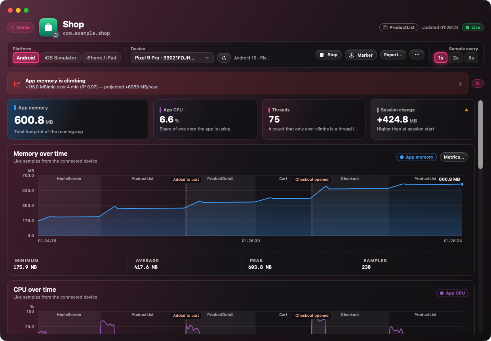
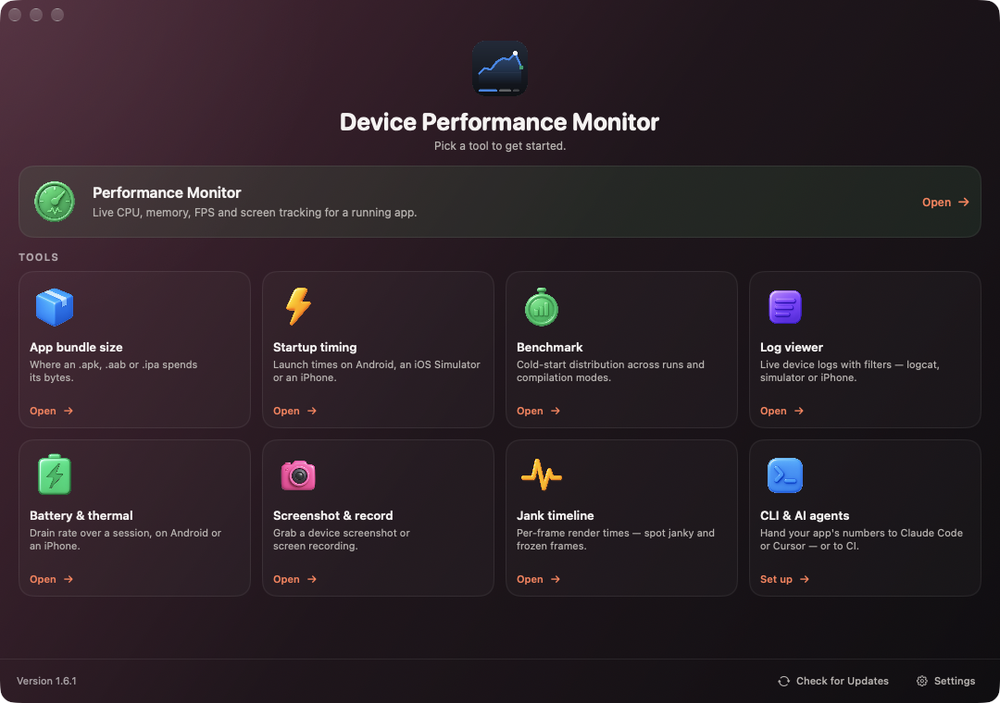
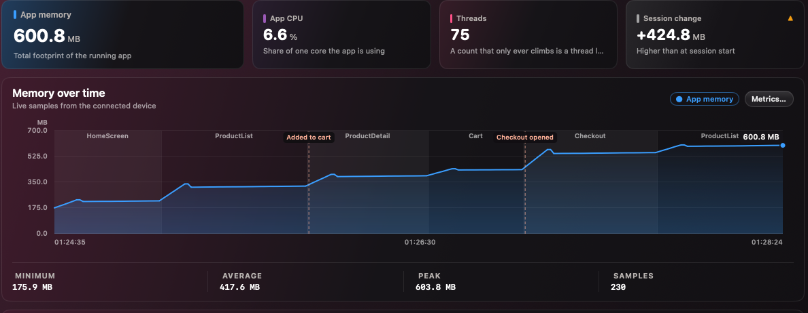
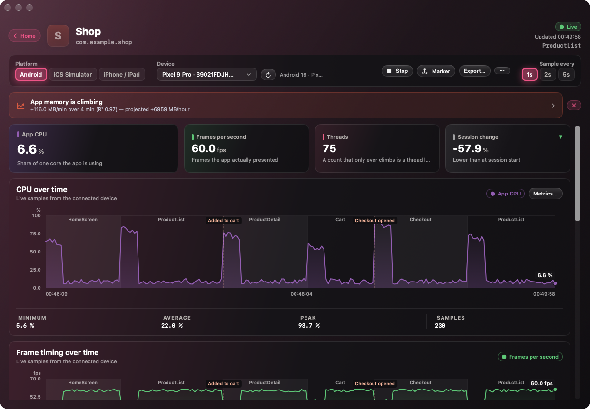
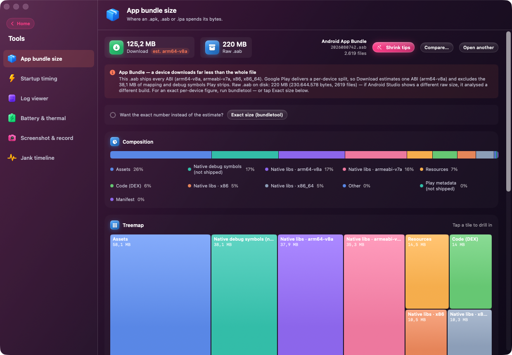
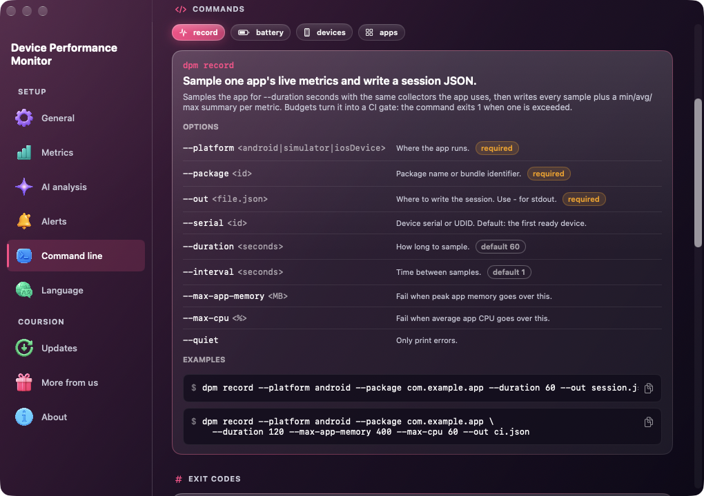
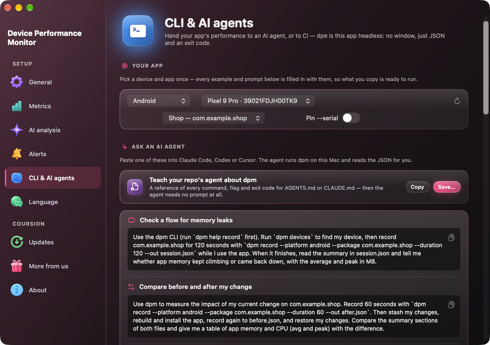
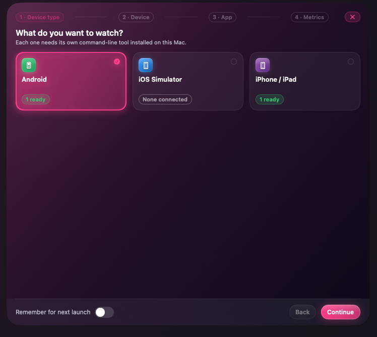

See exactly what your app
does to a device.
Device Performance Monitor watches the live memory, CPU, threads and frame-rate of one app — on an Android phone, an iOS Simulator, or a real iPhone or iPad. Have an AI read the session, then reach for the built-in tools: bundle size and build compare, startup timing, a cold-start benchmark, a jank timeline, a live log viewer, battery reports, screenshot & record, threshold alerts, and a dpm command line you can drop into CI or hand to an AI agent. You pick the platform, the device and the app inside the window. Nothing is hard-coded.
brew install --cask coursion-studio/tools/device-performance-monitor
See it before you install it.
Memory that never comes back down, a CPU spike that lines up with a tap, a build that grew for no reason — the things you open the app to find, and the tools you reach for next.
One home, every tool.
The app opens on a launcher that fits your screen. Live monitoring is the headline; seven tools sit under it, each with its own glyph, plus a Command line & AI card. Press one and the window eases open straight into it.
- Bundle size
- Startup
- Benchmark
- Logs
- Battery
- Capture
- Jank
- CLI

Live memory, broken down.
The app's total footprint and the share actually resident in RAM, charted second by second with minimum, average and peak called out. The session-change card tells you at a glance whether you finished heavier than you started.
- App PSS
- Resident RAM
- Swap
- Pool breakdown

Not just memory.
Per-process CPU as a share of a core, a live thread count that surfaces leaks the moment it stops coming back down, and frame-rate, jank and frame-time percentiles for anything that draws.
- App CPU
- Threads
- FPS
- Jank %
- Frame p95

See where every byte goes.
Drop an App Bundle and get the real per-device download — one ABI, debug symbols excluded — next to the raw file, a composition bar, a treemap you can drill into, and the biggest files. It matches Android Studio; run bundletool for the exact figure or compare two builds.
- Per-device estimate
- Treemap
- Biggest files
- Build compare

A real CLI, filled in for your app.
Install dpm on your PATH with one button. Pick your device and app once and every example fills itself in, so what you copy runs as-is — or press play and watch it run inside the page. Every command gets an options table, required and default tags and colour-coded exit codes. Set memory and CPU budgets and dpm record becomes a CI gate.
- One-click install
- Filled-in examples
- Run in place
- --max-app-memory
- Exit codes

Hand your app's numbers to an agent.
Four copyable prompts for Claude Code, Codex or Cursor: check a flow for memory leaks, compare before and after a change, add a CI performance gate, or compare battery drain across branches — each already naming your package. Or export the whole reference into your repo's AGENTS.md so the agent needs no prompt at all.
- Memory leaks
- Before / after
- CI gate
- AGENTS.md export

Point it at anything.
Start by choosing what to watch — an Android phone over adb, an iOS Simulator, or a real iPhone or iPad. The app finds ready devices for you; nothing is hard-coded to one project.
- Android
- iOS Simulator
- iPhone & iPad

Every number, one app, live.
One app at a time, sampled once a second, with only the metrics you chose fetched — so the tool never distorts what it is measuring.
Live memory
App PSS, resident and swap, plus the full pool breakdown — native heap, Java heap, graphics, code — updated every second.
CPU & threads
Per-process CPU and a live thread count, read straight from /proc and differenced tick to tick.
Frames & jank
Frames per second from SurfaceFlinger — even for a SurfaceView game — with jank percentage and frame-time p95 from gfxinfo.
Battery & network
Battery level, temperature and current draw, plus per-app received and sent throughput.
Any target
One Android phone over adb, an iOS Simulator, or a real iPhone or iPad — chosen in the window, nothing hard-coded.
AI session analysis
Have Claude, GPT, or Gemini read a session — a plain-language summary, per-screen diagnosis and fixes, a worst-screens ranking and anomaly flags, with your own API key.
Screen tracking
See which screen the app was showing for every reading — native and React Native — so a spike or leak is pinned to the route that caused it.
Export & baselines
Save a session as CSV, JSON, Markdown, a shareable HTML report, or the charts as PNG or PDF — and set a run as a baseline to diff future runs against it.
Session history
Every stopped session is saved automatically, so you can reopen an earlier run and analyze or compare it later — even after relaunching.
Speaks your language
English, Türkçe, Español, Deutsch and Français — switch in Settings and the interface re-localizes live, no relaunch.
More than a monitor.
A hub of standalone tools sits alongside live monitoring — pick one from the Home launcher and get to work. Seven full tools, threshold alerts and a dpm command line, with more landing over time.
App bundle size
Drop an .apk, .aab or .ipa and see where its bytes go — a composition bar, a category breakdown, a treemap and the biggest files. For an App Bundle it estimates the real per-device download (one ABI, debug symbols excluded) and matches Android Studio; run bundletool for the exact figure, compare two builds file by file, or ask an AI how to shrink it.
Startup timing
Cold and warm launch times on Android, an iOS Simulator or a real iPhone — batched across runs and charted with averages, so a regression in first-frame time is obvious. Pick the app from the installed list instead of typing an identifier.
Cold-start benchmark
Measure Android cold start the way Macrobenchmark does — over adb, no Gradle module or test needed. Pick a compilation profile (none, partial or full), and it recompiles, warms up, then times many launches and reports the distribution — median, p90 and p95 — with a stable-vs-noisy read.
Jank timeline
Per-frame render times captured from gfxinfo, with janky and frozen frames called out and the p95 frame time — so a stutter is a spike you can point at, not a feeling.
Log viewer
Stream live device logs — logcat, a simulator's log or an iPhone's syslog — with a text filter and a minimum level, colored by severity, follow the tail, and save the filtered lines to a file.
Battery & thermal
Track charge, temperature, charging and thermal state over a session with a derived drain rate. Save a labeled report, auto-record for a set duration, then compare two runs — a branch against main, or release against release — with the deltas and a plain verdict.
Screenshot & record
Grab a device screenshot (preview then save) or a screen recording — for Android and the iOS Simulator — without leaving the app.
dpm CLI & CI
The app doubles as a dpm command line, installed on your PATH with one click. dpm record samples an app without a window, writes a min/avg/max summary and fails the build on a memory or CPU budget; dpm battery captures a labeled report per branch; dpm devices and dpm apps find what to point it at.
Prompts for your AI agent
Copy a ready-made prompt into Claude Code, Codex or Cursor — check a flow for leaks, compare before and after a change, add a CI gate, or compare battery drain across branches. The agent runs dpm and reads the JSON back to you, or you can export the whole reference into AGENTS.md.
Threshold alerts
Set a ceiling or floor per metric — app memory over 400 MB, FPS under 45 — and get a system and in-window notification the moment a live reading crosses it.
Fail the build before your users feel it.
The same app, headless. Point dpm record at a device, give it a budget, and CI gets an exit code — plus a JSON summary to keep.
$ dpm devices
PLATFORM SERIAL MODEL STATE
android 39021FDJH00TK9 Pixel 9 Pro ready
$ dpm record --platform android --package com.example.shop \
--duration 120 --max-app-memory 400 --out perf.json
dpm record: sampling com.example.shop for 120s every 1s…
dpm record: wrote 120 samples · app memory avg 312 / peak 441 MB · CPU avg 18%
dpm record: FAIL — peak app memory 441 MB exceeds 400 MB
$ echo $?
1 # the build stops hereHand it to an agent
Paste this into Claude Code, Codex or Cursor — it runs dpm on your Mac and reads the numbers back to you.
Use the dpm CLI (run `dpm help record` first). Run `dpm devices` to find my device, then record com.example.app for 120 seconds with `dpm record --platform android --package com.example.app --duration 120 --out session.json` while I use the app. When it finishes, read the summary in session.json and tell me whether app memory kept climbing or came back down, with the average and peak in MB.Or teach the repo once
Export every command, flag and exit code into AGENTS.md — from the app, or straight off this site.
curl -s https://dpm.coursion.studio/cli.md >> AGENTS.mdFree. Universal. Auto-updating.
A signed, universal build for Apple silicon and Intel that updates itself in place.
Homebrew
Prefer the command line? Install and upgrade it with a cask.
brew install --cask coursion-studio/tools/device-performance-monitorRequires macOS 14 (Sonoma) or later, universal for Apple silicon and Intel. Android monitoring needs adb; iOS monitoring (Simulator or a real iPhone/iPad) needs Xcode's command-line tools. The bundle-size tool works on its own; its exact per-device figure optionally uses bundletool, and AI analysis uses your own Claude, OpenAI or Gemini key. The same app doubles as a dpm command line for CI and AI agents.